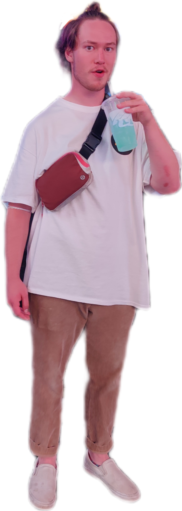
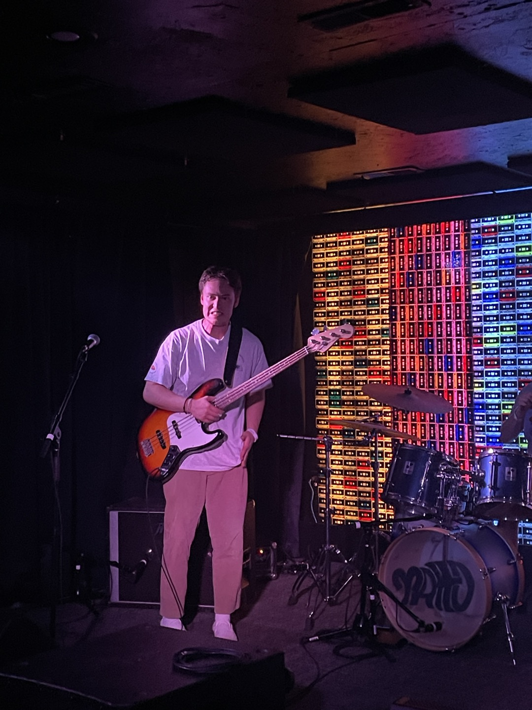
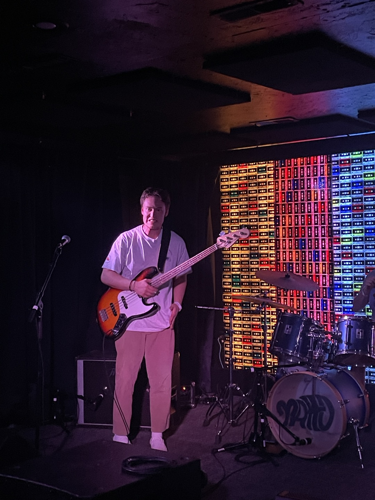

My name is Samuel Masato McKinley Hanamaikai.
I am 24 years old and I grew up in Santa Clarita, California.
I love music, the beach, and the Los Angeles Dodgers.
Most importantly, I love my family, especially my fiance Summer.
I love Taco Bell
I love Taco Bell
I love Taco Bell
 
